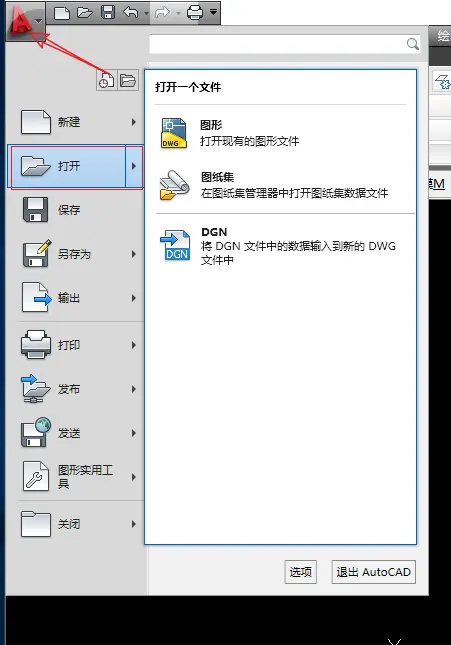
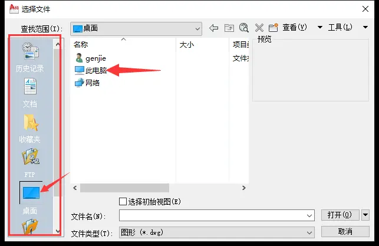
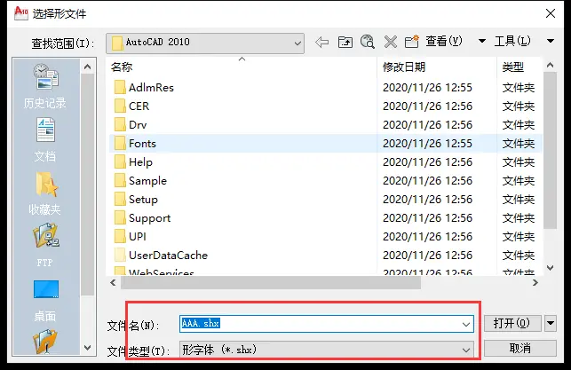
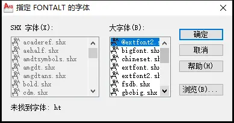
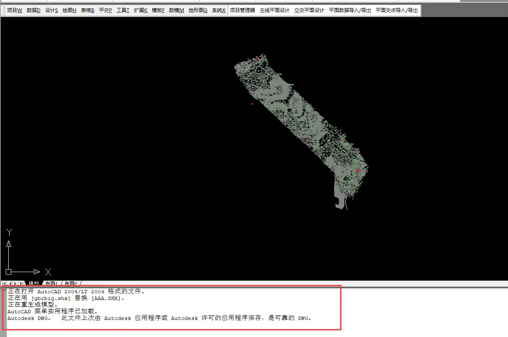

2.打开地形图
2.1 纬地操作步骤
这一点，比较简单。
点击 CAD 左上角的图标，单击打开就可以了，或者快捷键ctrl+O

然后弹出窗口：

这时候，点击左边栏的桌面，然后就看到你电脑的磁盘了，你找到你地形图的位置就好，我并不建议大家把所有东西都放到桌面上来，不过放也无所谓，个人喜好，记得备份到其它盘就好
找到地形图，选中，点击打开之后，可能会弹出类似以下的窗口：

这说明：你的电脑没有这个叫做AAA的字体文件，点击取消，然后弹出以下窗口：

**这个意思就是说，叫你用其它字体来替代AAA 这个字体，一般选国标字体来替换，国标字体：gbcbig.shx选中，点击确定。**然后稍微等一下就可以加载出来了。

我们可以看到这个命令栏上的提示：已经用国标字体替换了 AAA 字体。
2.2 注意事项
有些同学不断修改设计久了，会头脑混乱，**觉得直接双击打开地形图，直接做设计不行吗？**不行，还记得总步骤吗？
第一步就是新建项目，如果已经有项目，那么是打开项目。如果你直接双击打开地形图，那么这个地形图不在项目里面**。还记得第一节新建项目的开头我说了一句话：所有的数据都是基于项目文件之上的，如果你直接打开地形图，不会自动识别项目文件。
所以需要先打开项目文件，在项目里面打开地形图。